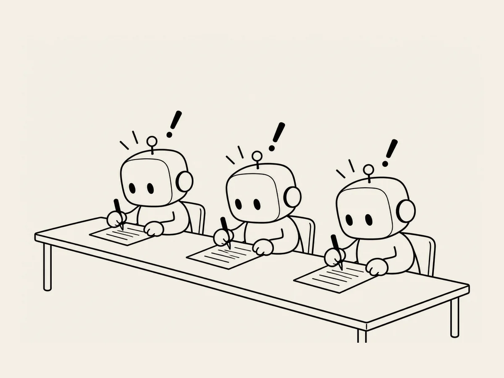

16.
ChatGPT, Gemini und Claude gleichzeitig dieselbe Frage stellen
Schon zwischen verschiedenen ChatGPT-Fenstern
fallen die Antworten ein wenig unterschiedlich aus.
Wie ist es dann bei anderen KIs?
Ich habe auch Gemini und Claude ausprobiert.
Also stellte ich allen KIs ganz offen dieselbe Frage.
„Vergleiche ChatGPT, Gemini und Claude.“
Die Antworten waren interessant.
„ChatGPT ist ein aktiver Co-Autor,
Claude ein literarischer Redakteur
und Gemini ein intelligenter Rechercheur und Organisator.“
„ChatGPT ist stark bei allgemeinen Aufgaben und beim Surfen im Web.
Claude bei Coding und langen Dokumenten.
Gemini bei Google Workspace und multimodalen Aufgaben.
Das ist die gemeinsame Schlussfolgerung vieler Vergleichsartikel.“
„ChatGPT ist der Allrounder und der letzte Prüfer.
Gemini ist stark bei aktuellen Recherchen.
Claude ist ein hervorragender Coding-Partner
und ein sorgfältiger Autor.“
Interessant.
Sind wir inzwischen in einer Zeit,
in der man KIs vergleicht
und sich dann für eine entscheidet?
Da kam mir ein Gedanke.
Bis jetzt hatte ich die Website
fast ausschließlich mit ChatGPT gebaut.
Aber was wäre,
wenn ich nach Fertigstellung der Website
allen drei genau dieselbe Website zeige
und sie um eine letzte Prüfung bitte?
ChatGPT.
Gemini.
Claude.
Sie sehen dieselbe Website.
Werden alle drei dasselbe sagen?
Oder findet jeder von ihnen etwas anderes,
das ich übersehen habe?
